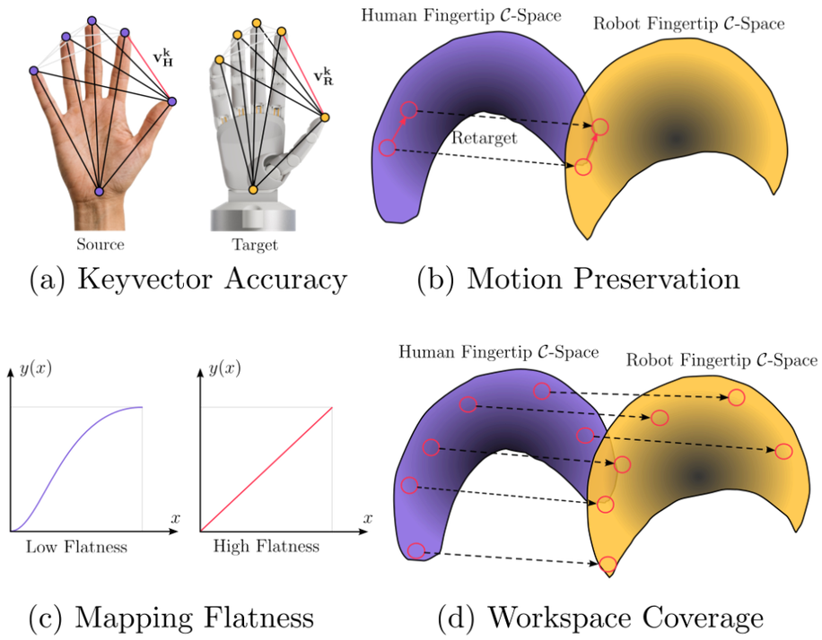
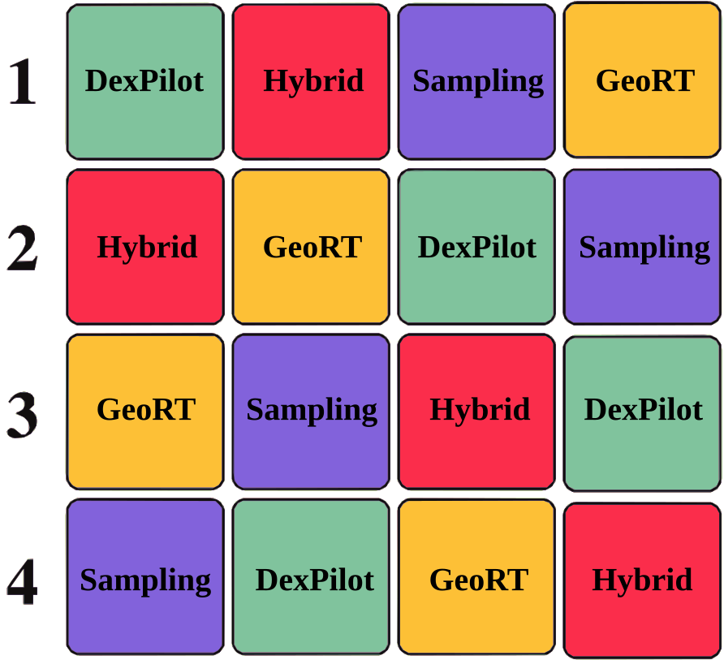
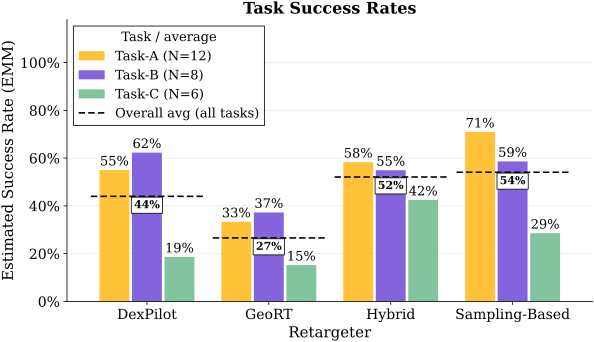
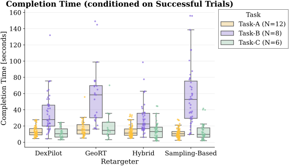
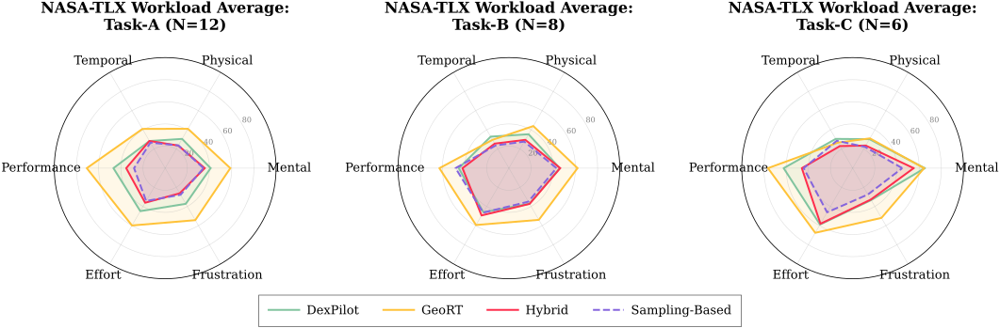

Retargeting Heuristics
We analyzed the theoretical performance of our algorithm using retargeting heuristics, tested across 14 different operators' hand motion recordings.

Utilizing the Kabsch-Umeyama algorithm to align the input human hand point cloud with the robot hand, we are able to have multiple operators use it to control the robot hand without any significant fine-tuning. The algorithm utilizes the weighting approach that is used in Model Predictive Path Integral (MPPI). Building upon this, it is synthesized with Model Predictive Optimized Path Integral (MPOPI) with the Improved Cross-Entropy Method (iCEM) being used for the Adaptive Importance Sampling (AIS) method.
We analyzed the theoretical performance of our algorithm using retargeting heuristics, tested across 14 different operators' hand motion recordings.

Due to operators' adapting to the task, statistical independence assumptions do not hold. We used a Balanced Latin Square design to assign operators to groups, controlling for ordering bias.

We evaluated our algorithm on 3 complex dexterous manipulation tasks, each designed to challenge different aspects of hand retargeting. This was tested with a total of 18 participants, their experiences ranging from complete novices to expert teleoperators.
Card Pickup (Task A)
Vertical Cube Rotation (Task B)
Screwdriver Pivot (Task C)
In the simulation metrics, SBR achieves the highest Cosine Similarity and Consistency metrics, tested with 14 different operators' hand recordings.
SBR achieves the highest overall task success rate of 54.1%. This outperforms DexPilot (44.0%) and GeoRT (26.6%) and slightly surpasses Hybrid (52.1%). The performance gap between SBR and the other methods is most pronounced in Task A (which represents a general manipulation task that most operators perform), where SBR achieves a success rate of 70.9%, compared to DexPilot (55.0%), Hybrid (58.3%), and GeoRT (33.3%). These results highlight the effectiveness of SBR in real-world teleoperation scenarios.

Compared to the completion times of DexPilot (23.3s) and Hybrid (21.6s), SBR has a higher overall completion time of 29.7s. However, it is still faster than GeoRT (33.3s). This can be attributed to the differences in how operators perform the tasks, with some operators aiming to perform the task faster than others. Additionally, from the chart, we can also see that this is attributed to Task B, where operators can continue to perform the task given that they did not drop the cube from the palm.

SBR achieves the lowest NASA Task Load Index (NASA-TLX) workload score of 36.4 out of 100. This indicates that the workload is lower compared to the other methods, which have higher scores: DexPilot (44.0), Hybrid (38.4), and GeoRT (56.4). This highlights the usability and intuitiveness of SBR.

The Kabsch-Umeyama algorithm is central to how we were able to control different robot hands with different operators without needing extensive fine-tuning. To better understand it, we recommend these blog posts by Hunter Heidenreich and Tuomas Siipola.
SBR is built upon the rich literature of sampling-based methods for controls. Model Predictive Path Integral (MPPI) is one of the foundational works in this area. Model Predictive Optimized Path Integral (MPOPI) improves upon MPPI's performance by using AIS strategies. For the AIS strategy, we took inspiration from the Improved Cross-Entropy Method (iCEM).
Because the operators' adapt to the task, we used a Balanced Latin Square design to control for ordering bias. For more information, we recommend this blog post by Damien Masson.
The NASA Task Load Index (NASA-TLX) is a widely used tool for assessing perceived workload. It has been used in various domains, including aviation, healthcare, and human-computer interaction. For more information, we recommend looking at the official NASA-TLX website.
@misc{Malate2026_SmoothOperator,
author = {Robert Jomar Malate and Erik Bauer and Norica Bacuieti and Stefanos Charalambous and Elvis Nava and Robert K. Katzschmann and Benedek Forrai},
title = {Smooth Operator: A Real-Time Sampling-Based Algorithm for Kinematic Hand Retargeting},
year = {2026},
}